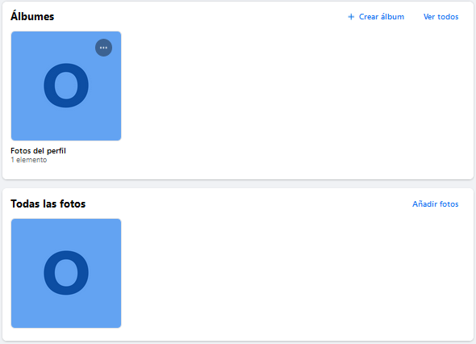
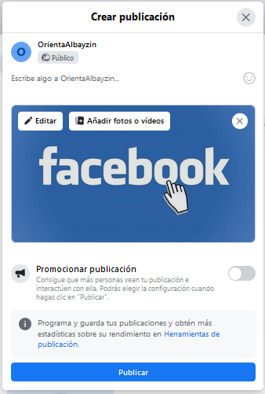
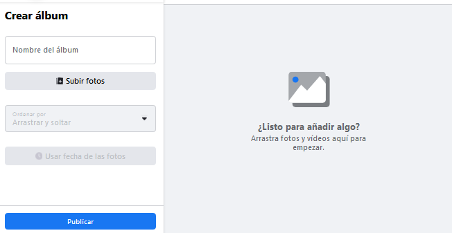

Fotos
El menú permite introducir fotos dentro de Facebook, así como realizar galerías de imágenes. Opción muy útil si deseamos poner imágenes de nuestros trabajos, obras, etc. Cada vez que introducimos una imagen ouna galería, crea automáticamente una publicación con la foto o galería que acabamos de introducir.
Cuando colocamos una imagen, podemos introducirla de forma independiente o asociarla a una galería. Cuando creamos una galería, podemos introducir varias fotos a la vez.
Al colocar una imagen, ya sea de forma individual o en galería, podemos indicar el lugar, hacer una descripción, poner un título de la imagen, o incluso etiquetar las personas que hay dentro de la foto.
Cuando pulsamos en dicho botón por primera vez, nos sale un menú como el que sigue:

Desde aquí podemos ver nuestras imágenes, las galería que tenemos, crear álbumes (galerías de imágenes) o añadir fotos. Veamos las opciones de añadir un poco mejor:
Añadir fotos
Para añadir una foto pulsamos en dicho botón. Nos aparece un menú para elegir una imagen o imágenes de nuestro ordenador. Una vez seleccionada, pulsamos añadir. Automáticamente nos aparece la ventana para crear una publicación con dicha imagen, en la cual deberemos de indicar una pequeña descripción, quién puede verla o si deseamos promocionarla. Si colocamos el cursor sobre la imagen antes de publicar, nos aparece la posibilidad de editar la imagen (recortar, rotar, etiquetar, o poner texto alternativo) o añadir otras fotos o videos. Por último, si pulsamos publicar se publicará dicha imagen en nuestra página Facebook.

 Crear albúm
Crear albúm
Un álbum o galería es un conjunto de imágenes agrupadas en un bloque común. Un ejemplo práctico lo tenemos en un álbum de fotos de un viaje, en el cual un conjunto de imágenes relativas a dicho viaje se agrupan. Cada imagen tiene las características de una imagen individual, por lo que podemos darle descripción, establecer quien puede verla, etiquetarla, etc. Y a su vez el albúm debe tener un nombre y una descripción. Los albumes son muy útiles para ordenar las imágenes y agruparlas.
